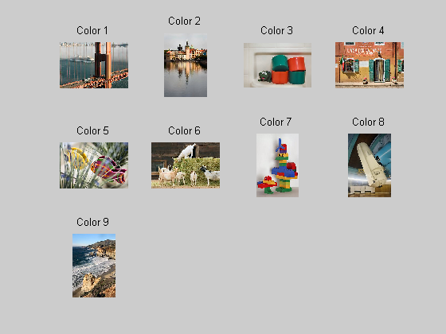
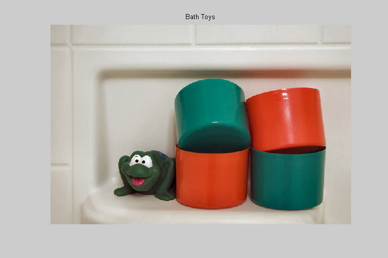
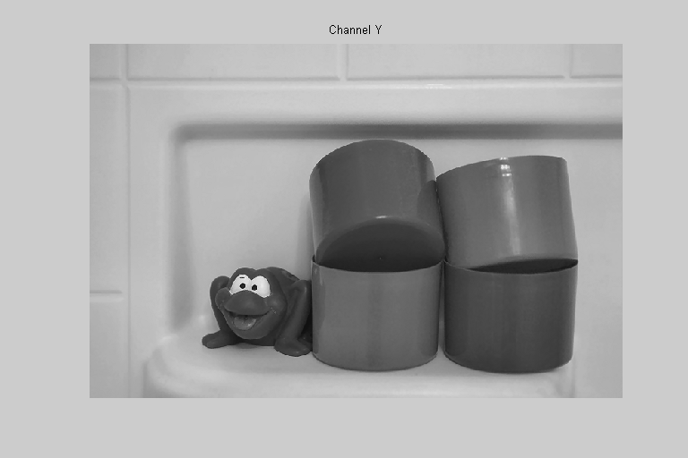
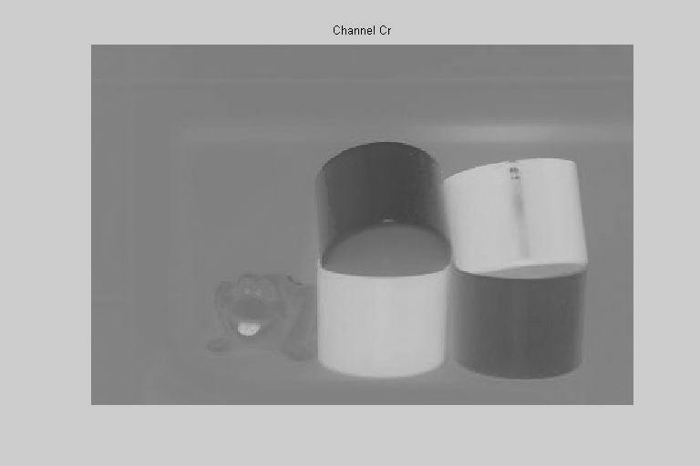
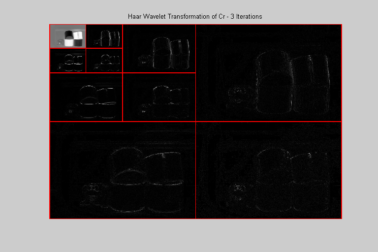
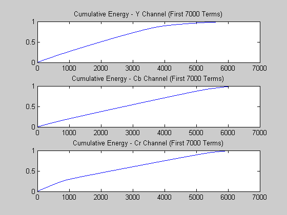
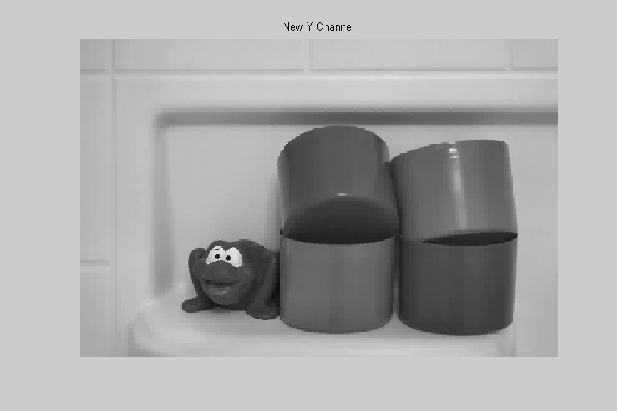
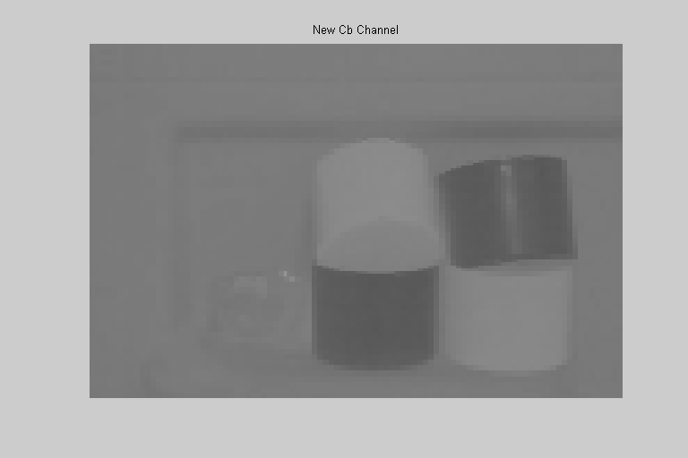

<!DOCTYPE html
  PUBLIC "-//W3C//DTD XHTML 1.0 Strict//EN">
<html xmlns:mwsh="http://www.mathworks.com/namespace/mcode/v1/syntaxhighlight.dtd">
   <head>
      <meta http-equiv="Content-Type" content="text/html; charset=utf-8">
   
      <!--
This HTML is auto-generated from an M-file.
To make changes, update the M-file and republish this document.
      -->
      <title>Color Image Compression</title>
      <meta name="generator" content="MATLAB 7.5">
      <meta name="date" content="2007-12-30">
      <meta name="m-file" content="colorcompression"><style>
      <link rel="stylesheet" type="text/css" href="style.css">
</head>
   <body>
<div class="header">
	<div class="left"><a href="matlab:edit colorcompression">Open colorcompression.m in the Editor</a></div>
      <div class="right"><a href="matlab:echodemo colorcompression">Run in the Command Window</a></div>
</div>
      <div class="content">
         <h1>Color Image Compression</h1>
         <introduction>
            <p>We can use discrete wavelet transformations to perform naive image compression.  The process is very similar to that used
               to compress grayscale images with the only difference being that the color image is imported as three channels (R,G,B) and
               then must be converted to Y,Cb,Cr space.  The process used to compress grayscale images is then applied to each of Y, Cb,
               and Cr.  The compressed versions of Y, Cb, and Cr are converted back to RGB space to obtain the compressed color image.
            </p>
            <p>It is helpful to review the Naive Edge Detection demo prior to viewing this demo.</p>
         </introduction>
         <h2>Contents</h2>
         <div>
            <ul>
               <li><a href="#1">Import a Digital Image</a></li>
               <li><a href="#3">Convert to YCbCr Space</a></li>
               <li><a href="#4">Compute the Discrete Wavelet Transformation</a></li>
               <li><a href="#5">Construct the Cumulative Energy Vectors</a></li>
               <li><a href="#6">Set the Energy Levels</a></li>
               <li><a href="#7">Quantize the Transformation</a></li>
               <li><a href="#9">Compute the Huffman Codes for Each of the Modified Transformations</a></li>
               <li><a href="#11">Compute the Inverse Transformations</a></li>
               <li><a href="#12">Convert Back to RGB Space</a></li>
               <li><a href="#13">Analysis</a></li>
               <li><a href="#14">Things to Try</a></li>
            </ul>
         </div>
         <h2>Import a Digital Image<a name="1"></a></h2>
         <p>We begin by importing a digital image. We will use one of the images that comes, courtesy of Radka Tezaur, with the DiscreteWavelets
            Toolbox.  The command ShowThumbnails can be used to see what choices are available.
         </p><pre class="codeinput">ShowThumbnails(<span class="string">'ImageType'</span>,<span class="string">'Color'</span>);

<span class="comment">%Let's use Color 3.</span>
</pre> <p>The code below reads this image from disk and plots it. ImageNames gives the absolute path to all included image files.</p><pre class="codeinput">clr=ImageNames(<span class="string">'ImageType'</span>,<span class="string">'Color'</span>);

<span class="comment">% Use ImageRead to read the image and store it in matrix A.  Note that A is</span>
<span class="comment">% actually a 3-dimensional array.</span>
A=ImageRead(clr{3});

<span class="comment">% Use ImagePlot to plot the image.</span>
clf;
ImagePlot(A);
title(<span class="string">'Bath Toys'</span>);
</pre> <h2>Convert to YCbCr Space<a name="3"></a></h2>
         <p>The first step in the compression process is to convert the image from RGB space to the more compression-conducive YCbCr space.
             We use the function RGBToYCbCr to complete this task.
         </p><pre class="codeinput"><span class="comment">% Convert from RGB to YCbCr</span>
B=RGBToYCbCr(A,<span class="string">'DisplayMode'</span>,<span class="string">'True'</span>);
[Y,Cb,Cr]=Split3D(B);

<span class="comment">% Plot each channel</span>
clf;
ImagePlot(Y);
title(<span class="string">'Channel Y'</span>);

figure
ImagePlot(Cb);
title(<span class="string">'Channel Cb'</span>);

figure;
ImagePlot(Cr);
title(<span class="string">'Channel Cr'</span>);
</pre>   <h2>Compute the Discrete Wavelet Transformation<a name="4"></a></h2>
         <p>We will use the discrete Haar wavelet transformation for this demo.   We next compute three iterations of the modified HWT.
             The transforation is modified by multiplying the filter [sqrt(2)/2, sqrt(2)/2] by sqrt(2).  In this way the filter will map
            integers to integers and improve the performance of the Huffman coder.  We need to remember to divide the inverse transform
            by sqrt(2) when we view the compressed image.
         </p><pre class="codeinput"><span class="comment">% Compute the HWTs of Y,Cb,Cr and store in Ywt,Cbwt,Crwt, respectively.</span>
its=3;
h=sqrt(2)*Haar();
Ywt=WT2D(Y,h,its);
Cbwt=WT2D(Cb,h,its);
Crwt=WT2D(Cr,h,its);

<span class="comment">% Plot the HWTs - first close other figures;</span>
close <span class="string">all</span>;

WaveletDensityPlot(Ywt,its,<span class="string">'DivideLinesColor'</span>,[1 0 0],<span class="keyword">...</span>
    <span class="string">'DivideLinesThickness'</span>,[2 2 2])
title(sprintf(<span class="string">'Haar Wavelet Transformation of Y - %i Iterations'</span>,its));

figure;
WaveletDensityPlot(Cbwt,its,<span class="string">'DivideLinesColor'</span>,[1 0 0],<span class="keyword">...</span>
    <span class="string">'DivideLinesThickness'</span>,[2 2 2])
title(sprintf(<span class="string">'Haar Wavelet Transformation of Cb - %i Iterations'</span>,its));
figure;
WaveletDensityPlot(Crwt,its,<span class="string">'DivideLinesColor'</span>,[1 0 0],<span class="keyword">...</span>
    <span class="string">'DivideLinesThickness'</span>,[2 2 2])
title(sprintf(<span class="string">'Haar Wavelet Transformation of Cr - %i Iterations'</span>,its));
</pre>   <h2>Construct the Cumulative Energy Vectors<a name="5"></a></h2>
         <p>We now find the cumulative energy vector for each of Ywt, Cbwt, and Crwt.</p><pre class="codeinput"><span class="comment">% Construct the cumulative energy vectors.</span>
ceYwt=CE(Ywt);
ceCbwt=CE(Cbwt);
ceCrwt=CE(Crwt);

<span class="comment">% Plot the first 7000 terms - first close all figures.</span>
close <span class="string">all</span>;

n=7000;
N=numel(Ywt);

figure;
subplot(3,1,1);
plot(ceYwt(1:7000));
title(<span class="string">'Cumulative Energy - Y Channel (First 7000 Terms)'</span>);

subplot(3,1,2);
plot(ceCbwt(1:7000));
title(<span class="string">'Cumulative Energy - Cb Channel (First 7000 Terms)'</span>);

subplot(3,1,3);
plot(ceCrwt(1:7000));
title(<span class="string">'Cumulative Energy - Cr Channel (First 7000 Terms)'</span>);
</pre> <h2>Set the Energy Levels<a name="6"></a></h2>
         <p>We now determine the number of terms in each of Ywt, Cbwt, and Crwt needed to comprise 100*r% of the energy in Ywt, Cbwt,
            and Crwt, respectively.
         </p><pre class="codeinput"><span class="comment">% Set the energy level.</span>
r=.9999;


<span class="comment">% Find the number of terms needed to comprise 100r% of the energy.</span>
kY=nCE(ceYwt,r);
str=sprintf(<span class="string">'The largest %i elements (in absolute value) of the Ywt constitute %f%% \nof the total energy of the transformation.\n'</span>,kY,100*r);
disp(str);

kCb=nCE(ceCbwt,r);
str=sprintf(<span class="string">'The largest %i elements (in absolute value) of the Cbwt constitute %f%% \nof the total energy of the transformation.\n'</span>,kCb,100*r);
disp(str);

kCr=nCE(ceCrwt,r);
str=sprintf(<span class="string">'The largest %i elements (in absolute value) of the Crwt constitute %f%% \nof the total energy of the transformation.\n'</span>,kCr,100*r);
disp(str);
</pre><pre class="codeoutput">The largest 9268 elements (in absolute value) of the Ywt constitute 99.990000% 
of the total energy of the transformation.

The largest 6179 elements (in absolute value) of the Cbwt constitute 99.990000% 
of the total energy of the transformation.

The largest 6485 elements (in absolute value) of the Crwt constitute 99.990000% 
of the total energy of the transformation.

</pre><h2>Quantize the Transformation<a name="7"></a></h2>
         <p>We now use the Comp function to quantize each of the transformations. The routine retains the largest (in absolute value)
            elements needed to comprise 100r% of the transformation and converts all other values to 0. Notat that the highpass portions
            of the modified transformations are quite different from their original counterparts.
         </p><pre class="codeinput"><span class="comment">% Perform the quantizations.</span>
newYwt=Comp(Ywt,kY);
str=sprintf(<span class="string">'We set %i elements in the transform to 0.  This constitutes %f%% \nof the total number of elements in B.\n'</span>,N-kY,100*(N-kY)/N);
disp(str);

newCbwt=Comp(Cbwt,kCb);
str=sprintf(<span class="string">'We set %i elements in the transform to 0.  This constitutes %f%% \nof the total number of elements in B.\n'</span>,N-kCb,100*(N-kCb)/N);
disp(str);

newCrwt=Comp(Crwt,kCr);
str=sprintf(<span class="string">'We set %i elements in the transform to 0.  This constitutes %f%% \nof the total number of elements in B.\n'</span>,N-kCr,100*(N-kCr)/N);
disp(str);
</pre><pre class="codeoutput">We set 383948 elements in the transform to 0.  This constitutes 97.643026% 
of the total number of elements in B.

We set 387037 elements in the transform to 0.  This constitutes 98.428599% 
of the total number of elements in B.

We set 386731 elements in the transform to 0.  This constitutes 98.350779% 
of the total number of elements in B.

</pre><p>Plot the modified transformations - first close all figures.</p><pre class="codeinput">close <span class="string">all</span>;

WaveletDensityPlot(newYwt,its,<span class="string">'DivideLinesColor'</span>,[1 0 0],<span class="keyword">...</span>
    <span class="string">'DivideLinesThickness'</span>,[2 2 2]);
title(<span class="string">'New Y Wavelet Transformation'</span>);

figure;
WaveletDensityPlot(newCbwt,its,<span class="string">'DivideLinesColor'</span>,[1 0 0],<span class="keyword">...</span>
    <span class="string">'DivideLinesThickness'</span>,[2 2 2]);
title(<span class="string">'New Cb Wavelet Transformation'</span>);

figure;
WaveletDensityPlot(newCrwt,its,<span class="string">'DivideLinesColor'</span>,[1 0 0],<span class="keyword">...</span>
    <span class="string">'DivideLinesThickness'</span>,[2 2 2]);
title(<span class="string">'New Cr Wavelet Transformation'</span>);
</pre>   <h2>Compute the Huffman Codes for Each of the Modified Transformations<a name="9"></a></h2>
         <p>We now compute the Huffman codes for each of the modified transformations.  Note that we have shifted the elements of each
            matrix so that the minimum is 0.  We have also rounded the shifted matrices since MakeHuffmanCodes requires integer input.
             The computations were previously done in floating point arithmetic to improve computation speed.  The rouding is valid at
            this step since the modified HWTs map integers to integers.
         </p><pre class="codeinput"><span class="comment">% Make the Huffman codes for each of newYwt, newCbwt, and newCrwt.</span>
[uniqY,freqY,codesY,origlenY,newlenY]=MakeHuffmanCodes(round(newYwt-min(min(newYwt))));
[uniqCb,freqCb,codesCb,origlenCb,newlenCb]=MakeHuffmanCodes(round(newCbwt-min(min(newCbwt))));
[uniqCr,freqCr,codesCr,origlenCr,newlenCr]=MakeHuffmanCodes(round(newCrwt-min(min(newCrwt))));

disp(<span class="string">'Finished!'</span>);
</pre><pre class="codeoutput">Finished!
</pre><p>Here is some information on the new bitstream lengths.</p><pre class="codeinput">str=sprintf(<span class="string">'For Ywt, the original bitstream length is %i and the new bitstream length is %i.'</span>,origlenY,newlenY);
disp(str);
bppY=newlenY/N;
str=sprintf(<span class="string">'The bits per pixel for the new bitstream is %f bpp.\n'</span>,bppY);
disp(str);

str=sprintf(<span class="string">'For Cbwt, the original bitstream length is %i and the new bitstream length is %i.'</span>,origlenCb,newlenCb);
disp(str);
bppCb=newlenCb/N;
str=sprintf(<span class="string">'The bits per pixel for the new bitstream is %f bpp.\n'</span>,bppCb);
disp(str);


str=sprintf(<span class="string">'For Crwt, the original bitstream length is %i and the new bitstream length is %i.'</span>,origlenCr,newlenCr);
disp(str);
bppCr=newlenCr/N;
str=sprintf(<span class="string">'The bits per pixel for the new bitstream is %f bpp.\n'</span>,bppCr);
disp(str);

<span class="comment">%Compute the composite bpp for all channels.</span>
bpp=(newlenY+newlenCb+newlenCr)/(3*N);
str=sprintf(<span class="string">'The composite bpp for all channels is %f.\n'</span>,bpp);
disp(str);

<span class="comment">% To get an idea of the best case compression scenario we compute the</span>
<span class="comment">% composite entropy of the wavelet transformation.</span>
e=Entropy([newYwt newCbwt newCrwt]);

str=sprintf(<span class="string">'The entropies of the transformation is %f.'</span>,e);
disp(str);
</pre><pre class="codeoutput">For Ywt, the original bitstream length is 3145728 and the new bitstream length is 504500.
The bits per pixel for the new bitstream is 1.283010 bpp.

For Cbwt, the original bitstream length is 3145728 and the new bitstream length is 454986.
The bits per pixel for the new bitstream is 1.157089 bpp.

For Crwt, the original bitstream length is 3145728 and the new bitstream length is 459811.
The bits per pixel for the new bitstream is 1.169360 bpp.

The composite bpp for all channels is 1.203153.

The entropies of the transformation is 0.398257.
</pre><h2>Compute the Inverse Transformations<a name="11"></a></h2>
         <p>The next step is to apply the inverse wavelet transformations to each of the newYwt, newCbwt, and newCrwt channels.  This
            gives us compressed Y, Cb, and Cr channels.  Don't forget to divide by sqrt(2).
         </p><pre class="codeinput">h=Haar()/sqrt(2);
newY=IWT2D(newYwt,h,its);
newCb=IWT2D(newCbwt,h,its);
newCr=IWT2D(newCrwt,h,its);

<span class="comment">% We plot the new Y, Cb, and Cr channels - first close all figures.</span>
close <span class="string">all</span>;
ImagePlot(newY);
title(<span class="string">'New Y Channel'</span>);

figure;
ImagePlot(newCb);
title(<span class="string">'New Cb Channel'</span>);

figure;
ImagePlot(newCr);
title(<span class="string">'New Cr Channel'</span>);
</pre>   <h2>Convert Back to RGB Space<a name="12"></a></h2>
         <p>Our last step is to convert back to RGB space.</p><pre class="codeinput"><span class="comment">% Gather newY, newCb, and newCr as a 3-D array.</span>
B=Make3D(newY,newCb,newCr);

<span class="comment">% Perform the color space conversion.</span>
compressedA=YCbCrToRGB(B,<span class="string">'DisplayMode'</span>,<span class="string">'True'</span>);


<span class="comment">% Plot the compressed image - first close all figures.</span>
close <span class="string">all</span>;
ImagePlot(compressedA);
title(<span class="string">'Compressed Image'</span>);

<span class="comment">% Plot the original image - make a second figure</span>
figure;
ImagePlot(A);
title(<span class="string">'Original Image'</span>);
</pre>  <h2>Analysis<a name="13"></a></h2>
         <p>The compressed image is not as sharp as the original.  But the compression rate is very good - about 1.2 bpp!  Note that the
            composity entropy is approximately 0.3983, so we would expect to achieve a better bpp if we used a coder a bit more sophisticated
            than Huffman's.
         </p>
         <h2>Things to Try<a name="14"></a></h2>
         <p>Make a copy of this demo and :</p>
         <div>
            <ul>
               <li>try different images</li>
               <li>try different transformations</li>
               <li>in particular, try LeGall with IntegerMap set to True</li>
               <li>use different percentages for quantizing the cumulative energy vector</li>
               <li>change the value of iterations to any integer 1, 2,..., 8</li>
            </ul>
         </div><pre class="codeinput">close <span class="string">all</span>;
</pre><p class="footer"><br>
            Published with MATLAB&reg; 7.5<br></p>
      </div>
      <!--
##### SOURCE BEGIN #####
%% Color Image Compression
% We can use discrete wavelet transformations to perform naive image
% compression.  The process is very similar to that used to compress
% grayscale images with the only difference being that the color image is
% imported as three channels (R,G,B) and then must be converted to Y,Cb,Cr
% space.  The process used to compress grayscale images is then applied to
% each of Y, Cb, and Cr.  The compressed versions of Y, Cb, and Cr are
% converted back to RGB space to obtain the compressed color image.
%
% It is helpful to review the Naive Edge Detection demo prior to viewing
% this demo.

%% Import a Digital Image
% We begin by importing a digital image. We will use one of the images that comes, courtesy of Radka Tezaur, with 
% the DiscreteWavelets Toolbox.  The command ShowThumbnails can be used to see what choices are available.
ShowThumbnails('ImageType','Color');

%Let's use Color 3.

%% 
% The code below reads this image from disk and plots it.
% ImageNames gives the absolute path to all included image files.
clr=ImageNames('ImageType','Color');

% Use ImageRead to read the image and store it in matrix A.  Note that A is
% actually a 3-dimensional array.
A=ImageRead(clr{3});

% Use ImagePlot to plot the image.
clf;
ImagePlot(A);
title('Bath Toys');

%% Convert to YCbCr Space
% The first step in the compression process is to convert the image from
% RGB space to the more compression-conducive YCbCr space.  We use the
% function RGBToYCbCr to complete this task.

% Convert from RGB to YCbCr
B=RGBToYCbCr(A,'DisplayMode','True');
[Y,Cb,Cr]=Split3D(B);

% Plot each channel
clf;
ImagePlot(Y);
title('Channel Y');

figure
ImagePlot(Cb);
title('Channel Cb');

figure;
ImagePlot(Cr);
title('Channel Cr');

%% Compute the Discrete Wavelet Transformation
% We will use the discrete Haar wavelet transformation for this demo.   We next compute three iterations
% of the modified HWT.  The transforation is modified by multiplying the
% filter [sqrt(2)/2, sqrt(2)/2] by sqrt(2).  In this way the filter will
% map integers to integers and improve the performance of
% the Huffman coder.  We need to remember to divide the inverse transform
% by sqrt(2) when we view the compressed image.

% Compute the HWTs of Y,Cb,Cr and store in Ywt,Cbwt,Crwt, respectively.
its=3;
h=sqrt(2)*Haar();
Ywt=WT2D(Y,h,its);
Cbwt=WT2D(Cb,h,its);
Crwt=WT2D(Cr,h,its);
 
% Plot the HWTs - first close other figures;
close all;

WaveletDensityPlot(Ywt,its,'DivideLinesColor',[1 0 0],...
    'DivideLinesThickness',[2 2 2])
title(sprintf('Haar Wavelet Transformation of Y - %i Iterations',its));

figure;
WaveletDensityPlot(Cbwt,its,'DivideLinesColor',[1 0 0],...
    'DivideLinesThickness',[2 2 2])
title(sprintf('Haar Wavelet Transformation of Cb - %i Iterations',its));
figure;
WaveletDensityPlot(Crwt,its,'DivideLinesColor',[1 0 0],...
    'DivideLinesThickness',[2 2 2])
title(sprintf('Haar Wavelet Transformation of Cr - %i Iterations',its));

%% Construct the Cumulative Energy Vectors
% We now find the cumulative energy vector for each of Ywt, Cbwt, and Crwt.

% Construct the cumulative energy vectors.
ceYwt=CE(Ywt);
ceCbwt=CE(Cbwt);
ceCrwt=CE(Crwt);

% Plot the first 7000 terms - first close all figures.
close all;

n=7000;
N=numel(Ywt);

figure;
subplot(3,1,1);
plot(ceYwt(1:7000));
title('Cumulative Energy - Y Channel (First 7000 Terms)');

subplot(3,1,2);
plot(ceCbwt(1:7000));
title('Cumulative Energy - Cb Channel (First 7000 Terms)');

subplot(3,1,3);
plot(ceCrwt(1:7000));
title('Cumulative Energy - Cr Channel (First 7000 Terms)');

%% Set the Energy Levels
% We now determine the number of terms in each of Ywt, Cbwt, and Crwt
% needed to comprise 100*r% of the energy in Ywt, Cbwt, and Crwt,
% respectively. 

% Set the energy level.
r=.9999;


% Find the number of terms needed to comprise 100r% of the energy.
kY=nCE(ceYwt,r);
str=sprintf('The largest %i elements (in absolute value) of the Ywt constitute %f%% \nof the total energy of the transformation.\n',kY,100*r);
disp(str);

kCb=nCE(ceCbwt,r);
str=sprintf('The largest %i elements (in absolute value) of the Cbwt constitute %f%% \nof the total energy of the transformation.\n',kCb,100*r);
disp(str);

kCr=nCE(ceCrwt,r);
str=sprintf('The largest %i elements (in absolute value) of the Crwt constitute %f%% \nof the total energy of the transformation.\n',kCr,100*r);
disp(str);

%% Quantize the Transformation
% We now use the Comp function to quantize each of the transformations.
% The routine retains the largest (in absolute value) elements needed to
% comprise 100r% of the transformation and converts all other values to 0.
% Notat that the highpass portions of the modified transformations are quite
% different from their original counterparts.

% Perform the quantizations.
newYwt=Comp(Ywt,kY);
str=sprintf('We set %i elements in the transform to 0.  This constitutes %f%% \nof the total number of elements in B.\n',N-kY,100*(N-kY)/N);
disp(str);

newCbwt=Comp(Cbwt,kCb);
str=sprintf('We set %i elements in the transform to 0.  This constitutes %f%% \nof the total number of elements in B.\n',N-kCb,100*(N-kCb)/N);
disp(str);

newCrwt=Comp(Crwt,kCr);
str=sprintf('We set %i elements in the transform to 0.  This constitutes %f%% \nof the total number of elements in B.\n',N-kCr,100*(N-kCr)/N);
disp(str);

%%
% Plot the modified transformations - first close all figures.
close all;

WaveletDensityPlot(newYwt,its,'DivideLinesColor',[1 0 0],...
    'DivideLinesThickness',[2 2 2]);
title('New Y Wavelet Transformation');

figure;
WaveletDensityPlot(newCbwt,its,'DivideLinesColor',[1 0 0],...
    'DivideLinesThickness',[2 2 2]);
title('New Cb Wavelet Transformation');

figure;
WaveletDensityPlot(newCrwt,its,'DivideLinesColor',[1 0 0],...
    'DivideLinesThickness',[2 2 2]);
title('New Cr Wavelet Transformation');

%% Compute the Huffman Codes for Each of the Modified Transformations
% We now compute the Huffman codes for each of the modified
% transformations.  Note that we have shifted the elements of each matrix
% so that the minimum is 0.  We have also rounded the shifted matrices
% since MakeHuffmanCodes requires integer input.  The computations were
% previously done in floating point arithmetic to improve computation
% speed.  The rouding is valid at this step since the modified HWTs map
% integers to integers.

% Make the Huffman codes for each of newYwt, newCbwt, and newCrwt.
[uniqY,freqY,codesY,origlenY,newlenY]=MakeHuffmanCodes(round(newYwt-min(min(newYwt))));
[uniqCb,freqCb,codesCb,origlenCb,newlenCb]=MakeHuffmanCodes(round(newCbwt-min(min(newCbwt))));
[uniqCr,freqCr,codesCr,origlenCr,newlenCr]=MakeHuffmanCodes(round(newCrwt-min(min(newCrwt))));

disp('Finished!');

%% 
% Here is some information on the new bitstream lengths.

str=sprintf('For Ywt, the original bitstream length is %i and the new bitstream length is %i.',origlenY,newlenY);
disp(str);
bppY=newlenY/N;
str=sprintf('The bits per pixel for the new bitstream is %f bpp.\n',bppY);
disp(str);

str=sprintf('For Cbwt, the original bitstream length is %i and the new bitstream length is %i.',origlenCb,newlenCb);
disp(str);
bppCb=newlenCb/N;
str=sprintf('The bits per pixel for the new bitstream is %f bpp.\n',bppCb);
disp(str);


str=sprintf('For Crwt, the original bitstream length is %i and the new bitstream length is %i.',origlenCr,newlenCr);
disp(str);
bppCr=newlenCr/N;
str=sprintf('The bits per pixel for the new bitstream is %f bpp.\n',bppCr);
disp(str);

%Compute the composite bpp for all channels.
bpp=(newlenY+newlenCb+newlenCr)/(3*N);
str=sprintf('The composite bpp for all channels is %f.\n',bpp);
disp(str);

% To get an idea of the best case compression scenario we compute the
% composite entropy of the wavelet transformation.
e=Entropy([newYwt newCbwt newCrwt]);

str=sprintf('The entropies of the transformation is %f.',e);
disp(str);


%% Compute the Inverse Transformations
% The next step is to apply the inverse wavelet transformations to each of
% the newYwt, newCbwt, and newCrwt channels.  This gives us compressed Y,
% Cb, and Cr channels.  Don't forget to divide by sqrt(2).

h=Haar()/sqrt(2);
newY=IWT2D(newYwt,h,its);
newCb=IWT2D(newCbwt,h,its);
newCr=IWT2D(newCrwt,h,its);

% We plot the new Y, Cb, and Cr channels - first close all figures.
close all;
ImagePlot(newY);
title('New Y Channel');

figure;
ImagePlot(newCb);
title('New Cb Channel');

figure;
ImagePlot(newCr);
title('New Cr Channel');

%% Convert Back to RGB Space
% Our last step is to convert back to RGB space.  

% Gather newY, newCb, and newCr as a 3-D array.
B=Make3D(newY,newCb,newCr);

% Perform the color space conversion.
compressedA=YCbCrToRGB(B,'DisplayMode','True');


% Plot the compressed image - first close all figures.
close all;
ImagePlot(compressedA);
title('Compressed Image');

% Plot the original image - make a second figure
figure;
ImagePlot(A);
title('Original Image');

%% Analysis
% The compressed image is not as sharp as the original.  But the
% compression rate is very good - about 1.2 bpp!  Note that the composity entropy is
% approximately 0.3983, so we would expect to achieve a better bpp if we used
% a coder a bit more sophisticated than Huffman's.

%% Things to Try
% Make a copy of this demo and :
%
% * try different images
% * try different transformations
% * in particular, try LeGall with IntegerMap set to True
% * use different percentages for quantizing the cumulative energy vector
% * change the value of iterations to any integer 1, 2,..., 8
% 

%%
close all;
displayEndOfDemoMessage(mfilename)
##### SOURCE END #####
-->
   </body>
</html>